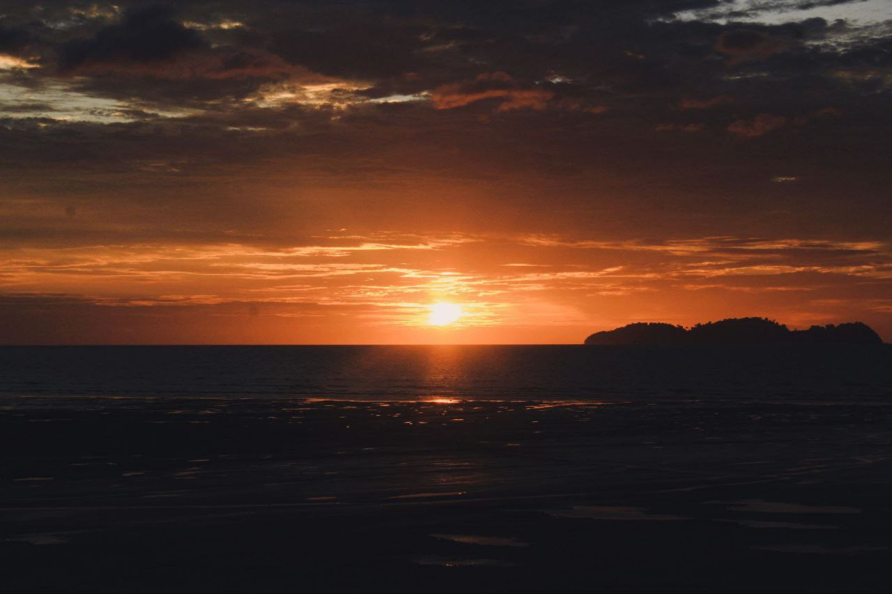

This is a screenshot of my games library in an app called Steam.
I play a lot of games ever since I was a little kid. Most of the games I played, I played on a laptop.
Listening to Music
This is a screenshot of my Youtube Music playlist library.
I personally make all the playlist, I listen to my playlist I made based on my mood, it depends on the day. But my favorite playlist is Pinkguy, it's a playlist consist of all Joji albums and songs.
Explore Nature

This is a picture of sunset I took using my camera.
I bought a camera just because I can take a clear picture of the nature beauty. This sunset picture I took is located near my house at Pantai Ruat